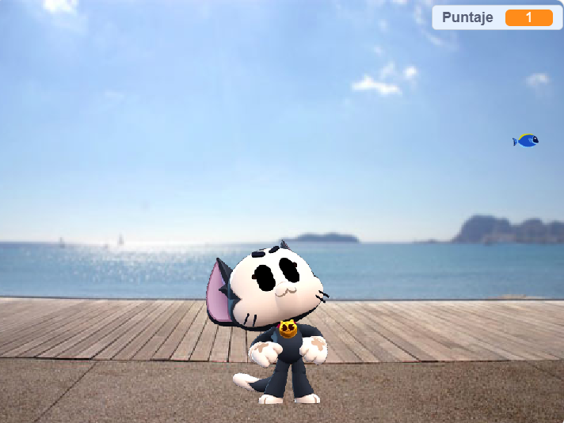
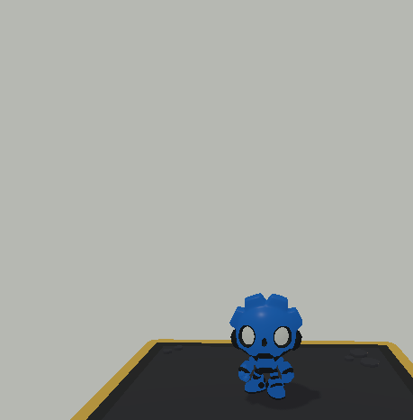

🐱 Kit Comiendo Pescados
Scratch - Arcade / 2D
Kit caza pescados que caen y suma puntos. Si un pescado toca el suelo, perdés.
▶ Jugar en Scratch
👻 Billy Is Here
RPG Maker - RPG / Terror
Un RPG narrativo: puertas cerradas, una llave escondida y un final con persecución.
⬇ Descargar .exe
🤖 Gobot Adventures
Godot - Plataformas / 3D
Juntá 6 monedas para pasar al mundo abierto. Aventura 3D con un robot.
⬇ Descargar 📂 Ver proyecto editable (Godot)